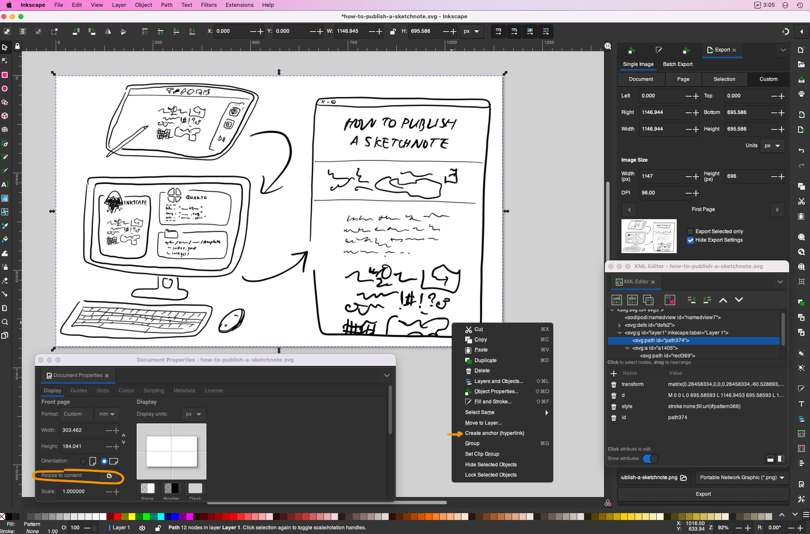

Sketchnote Page
for visual summaries, illustrations, etc.
Description of illustration/sketchnote:
This black and white illustration shows an iPad with a drawing app open to a sketchnote in the top left quadrant, which is linked by an arrow to a computer in the bottom left quadrant. The computer has three windows showing the logo of tools used to process a sketchnote: Inkscape, Quarto and file explorer. The computer is linked by an arrow to a webpage on the right side of the image with the title ‘How to Publish a Sketchnote’.
Links related to this illustration/sketchnote:
- link to media (podcast/book/media etc.)
Links embedded in the sketchnote:.
- embedded links
This illustration/sketchnote was drawn with Notability in Nov 2022 and edited with Inkscape. (Cynthia Huang © 2022, CC BY-SA 4.0)
Template Notes
Web Design with Quarto and SVG
Toggle the </> code menu to see .qmd file source code. The class="sketchnote" is defined in styles.css.
params: field
Set values in the params: field of the YAML header – e.g.
params:
drawing_tool: "notability"
date_drawn: 2022-11-01
interactive: TRUEThis is an inline code chunk for conditional inclusion of text:
`r if(params$interactive){"This sketchnote is interactive. Try clicking around various parts of the image"}`Toggle the </> code menu to see the R code chunk params-prep used to prepare variables used in text about the sketchnote.
Include these values every time:
title: "Sketchnote Page"
subtitle: "for visual summaries, illustrations, etc."
date: 2022-11-01
params:
drawing_tool: "notability/concepts" ## must be in _params-dict.R ##
date_drawn: 2022-11-01
draw_type: "illustration/sketchnote" ## pick one
interactive: TRUE ## if SVG contains any links or interactivity
main_alt_text: "" ## write this using the relevant alt-text strategy ##Include only if you want to override the default values gallery/_metadata.yml:
- just save images/objects using the correct name (
featured.*) - add any resources embedded using HTML tags to the
resources:list. If not, they won’t get copied into the output directory.
image: "images/featured.png"
image-alt: "A hand-drawn illustration/sketchnote described in this article"
resources:
- "images/featured.svg"Specific to template posts:
format:
html:
code-tools: true- Export sketch from ipad to
images/ipad.pngorimages/ipad.svg(depending on app support) - Start a new Inkscape document and import the sketch.
- Crop the image to remove excess white space (i.e. if iPad export was A4): how-to
- Resize the canvas to fit:
File > Document Properties > Fit Page to Selection - Convert image
Object to Pattern - Divide image into anchor regions by adding a line (
b) or shape, add the image pattern to the selection (s), and applyingPath > Division (⌘/): tutorial - Right click divided region and select
Create anchors. Add URL tohreffield, and settarget=_blank - Inspect XML tree to check anchor nodes (optional)
- Save graphic to
images/feature.svg

<object>
The default snippet ../../_figure-snippet.md assumes the sketchnote/svg is named feature.svg
To customise the display or caption of the sketchnote/illustration, or to display multiple SVGs, modify and include the snippet below in place of the {{< include ... >}} shortcode.
.column-pageclass is predefined by Quarto theme1<figure>tag provides support for a<figcaption>2<object>embeds the SVG, with.sketchnoteclass defined instyles.cssspecifyingtype="image/svg+xml"and other custom attributes
<figure>
<object data="images/featured.svg" class="sketchnote"> </object>
<figcaption style="text-align: right">Cynthia Huang © `r format(ddate, "%Y")`, [CC BY-SA 4.0](https://creativecommons.org/licenses/by-sa/4.0/)</figcaption>
</figure>There are four ways to include SVG in Web pages:
- as an
<img>element. This is whatwill render as and essentially converts the SVG into a raster image (which means no child element interactions). - as a CSS background. Haven’t tried this; seems to be recommended for decorative images.
- Inline SVG. Also haven’t tried this; would likely preclude GUI editing of the SVG so probably only suitable for simple vector graphics (which don’t have the complicated pattern elements of sketchnotes)
- as an application embedded via
<object>element. This preserves any links embedded inside the SVG, and supports interfacing between the parent document and the SVG object via SVG DOM (which I don’t yet understand how to use).
Reference Resources:
- Chapter 1. Using SVG in Web Pages of Modern SVG by Amelia Bellamy-Royds and Kurt Cagle for extended discussion
- Using SVG by Chris Coyier on CSS-tricks for short tutorial
2022-11-02: I picked embedding via the <object> element because it was the only one where hyperlinks I inserted into the .svg using Inkspace still worked. I plan to experiment with more advanced interactivity in the future.
Web Accessibility
About SVGs and alt-text attributes:
- SVG is not an image, it is a graphics-document (defined using XML)
alt-textfor the sketchnote is defined inparams: main_alt_text:using the strategies detailed belowaria-labeloraria-labelledbyattributes are recommended for objects.3- Fallback content (inside
<object>tags) is only rendered when the object embedding is not successful, so is not a suitable place to put text for accessibility 4 - including
<title>and<desc>directly in the SVG is often recommended but only suitable for inline SVG.5
About sketchnote/data-viz accessibility:
- if the SVG is interactive you can make it screen reader traversable… but it’s complicated and involves ordering and naming nodes appropriately, amongst other things. One would need to adapt these instructions for creating an Accessible Graph.
- an option for 301 level WCAG conformance offered by Nitya Narasimhan in this discussion thread started by Megan Sullivan is turning the graphic into a “interactive information guide”
Resources List:
- Accessible SVGs - University of Melbourne for background context and simple code exampes
- Accessible SVGs by Heather Migliorisi for more extended discussion and complex code examples
- Sketch Note Accessibility by Saara Kamppari-Miller for example of extending alt-text accessibility with a Talk-Through Video which describes the emergent information structure of a sketchnote.
- Web Content Accessibility Guidelines (WCAG) 2.1 Success Criterion 1.1.1: Non-text Content) for in-depth discussion and detailed alt-text techniques and scenarios.6
2022-11-02: At the moment, all alt-text is provided below the SVG figure. I don’t think this is optimal for screen-readers but embedding alt-text is complicated and beyond me right now.7 My approach will likely evolve as I learn more html/css/svg concepts.
Use some or all of the following elements to describe the purpose, content and “flow” of the illustration. The description can be more comprehensive compared to a sketchnote.
- Illustration Type:
- cartoon
- schematic
- illlustration
- (line) plot
- visual representations
- Description of visual elements with position context:
- On the left…
- A row of…
- Left panel… Right panel…
- The progression goes from…
- Text quotes and labels in context:
- Text above… quotes Jenny Bryan: “Collaboration is…”
- Text above the laptop reads: “Plan on it.”
- several anchors, each labeled “Commit”
- a cape that reads “code hero”…
- Clarification of key message or takeaway
- The point being: …
- Main text:
Strategy and examples adapted from Allison Horst’s Stats Illustrations
Follow this recipe for image descriptions which provide context and some key details about the sketchnote. Remember the point isn’t to share every visual and text element of the sketchnote in the alt-text, but to describe the function provided by the sketchnote.
- Visual Context: black and white {digital/hand-drawn} visual notes
- Content Context: summarising {title of source media or event}
- Key takeaway: {key quote or note}
- Prominent visual element: {any signature elements for which visual description should be included}
Adapted from Sketch Note Accessibility by Saara Kamppari-Miller
Footnotes
See Article Layout↩︎
See this stackoverflow answer for example code↩︎
as explained by this stackoverflow answer↩︎
See Accessible SVG: Methods for Adding Alternative Content by Carie Fisher↩︎
This is not a light read. It’s much further down the rabbit hole than most people (myself included) have time for.↩︎
See discussion in Sketch Note Accessibility by Saara Kamppari-Miller↩︎